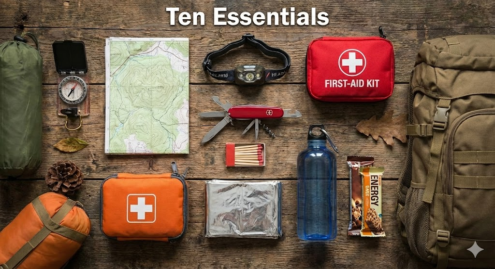
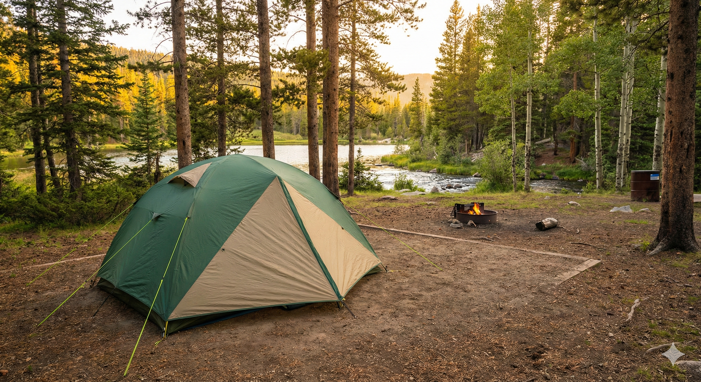
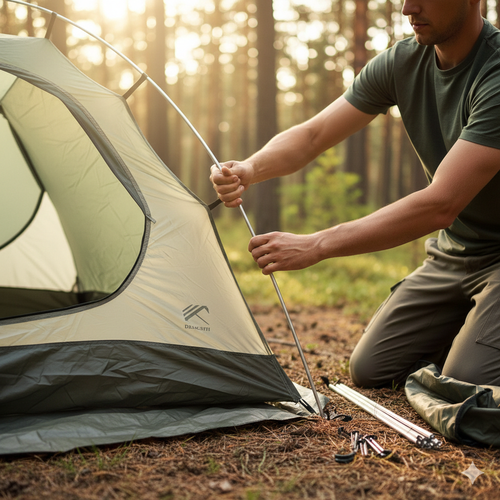
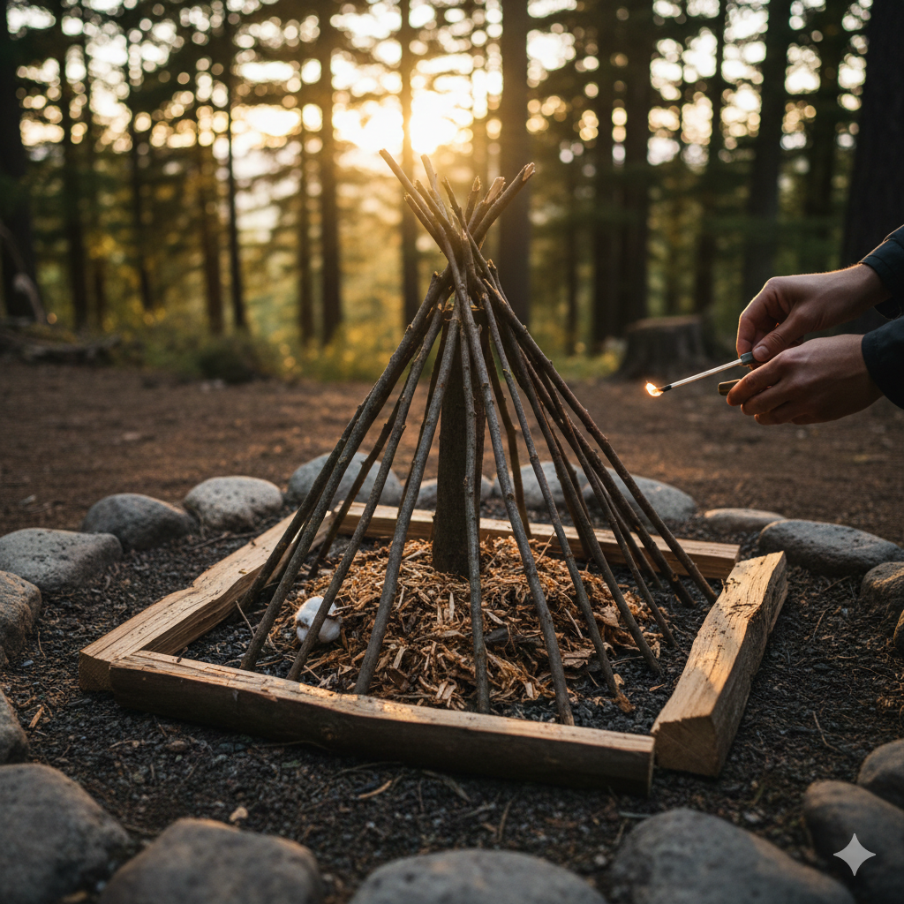

Getting Started With Camping
Steps in preparing for your first camping trip:
- Check the local weather forecast.
- Gather the "Ten Essentials" (navigation, sun protection, insulation, illumination, first-aid, fire, repair kit, nutrition, hydration, emergency shelter).
- Pack your main gear: Tent, Sleeping Bag, and Sleeping Pad.
- Plan your meals and bring plenty of water.
- Double-check your pack before hitting the trail.

Choosing A Campsite
Finding the right location to pitch your tent is the first major task once you arrive at the campground.
You want to look for level ground, good drainage, and safe surroundings. Avoid pitching your tent directly under dead branches (often called "widowmakers").

Campsite Checklist:
- Flat, even ground.
- At least 200 feet away from lakes or streams.
- Natural windbreaks nearby.
- No ant hills or animal dens underneath.
As you can see, choosing a site requires balancing comfort with safety and environmental guidelines.
A well-chosen site guarantees a much better night's sleep.
Setting Up The Tent
In order to set up your shelter securely, you need to follow a logical order of operations.
It might seem cumbersome if it's windy, but doing it methodically prevents broken poles and lost stakes.

Shelter Assembly:
- Lay down the ground tarp (footprint).
- Unfold the main tent body on top.
- Assemble all tent poles.
- Insert poles into grommets and clip the tent body to them.
- Stake out the corners.
- Attach and stake the rainfly.
In this example, we are prioritizing the ground layer first so moisture doesn't seep into the tent floor.
Starting A Campfire
Building a fire requires three types of combustible materials and a spark. Here is an overview of how to structure it.

Some basic materials to gather:
Fire Materials Required:
- Tinder: Dry leaves, pine needles, or dryer lint to catch the initial spark.
- Kindling: Small twigs, roughly the thickness of a pencil, to build the flame.
- Fuel Wood: Larger logs to sustain the burn for a longer period.
Campground Etiquette
Camping relies heavily on an unwritten social contract among nature enthusiasts.
This means respecting your neighbors, local wildlife, and the environment by strictly practicing "Leave No Trace" principles.
An example of this might be packing out all your trash instead of throwing it in the fire ring.
Leave No Trace Principles:
- Plan Ahead and Prepare
- Travel and Camp on Durable Surfaces
- Dispose of Waste Properly
- Leave What You Find
- Minimize Campfire Impacts
- Respect Wildlife
- Be Considerate of Other Visitors
You ensure a great trip for everyone by doing the following:
- Keeping noise down after 10:00 PM
- Storing food securely away from bears and raccoons
- Extinguishing your fire until the ashes are cool to the touch